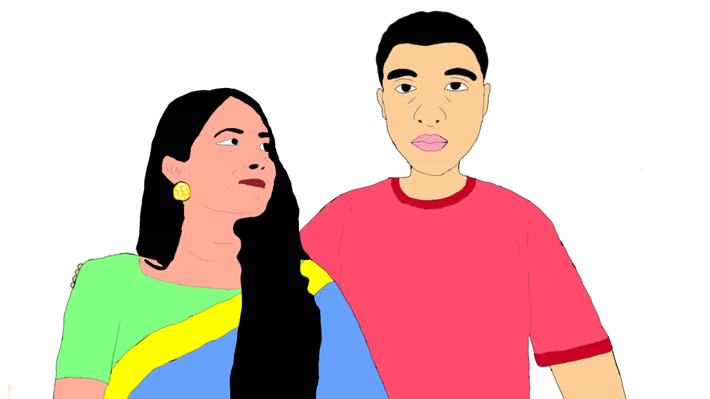
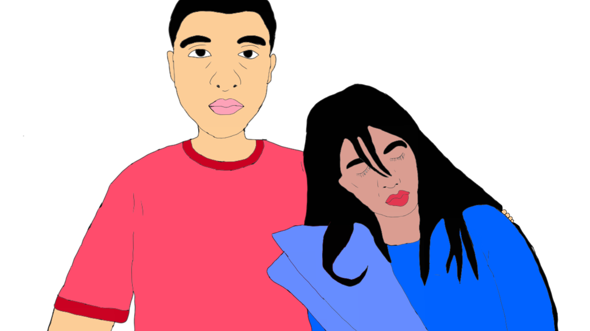

1 April 2023
5:07 pm
একদিন আমি আর আমার স্ত্রী পায়ে হেটে শপিংমল এ যাচ্ছিলাম, যেহেতু এটা আমাদের বাসা থেকে মাত্র ২ কিমি. ছিল। হঠাৎ সে থেমে গেল।
স্ত্রী : আমি পায়ে হেটে যেতে চাই না। একটা CNG নাও।
আমি: কেন? এটা আমাদের বাড়ির খুব কাছে। আমরা যদি পায়ে হেঁটে সেখানে যাই, তা আমাদের স্বাস্থ্যের জন্য খুবই সহায়ক হবে।
স্ত্রী : প্লিজ। একটি সিএনজি নাও।
তারপর আমি একটা সিএনজি নিয়ে সেখানে গেলাম। সেখানে পৌঁছে আমরা সিএনজি থেকে নামলাম এবং সে বলল -
স্ত্রী : আমার কাঁধে হাত রাখো।
আমি: কেন?
স্ত্রী : বেশি কথা বলো না। শুধু তোমার হাতটা আমার কাঁধে রাখো আর চল যাই।
তারপর, আমি এটা করলাম এবং হাঁটা শুরু করলাম।
স্ত্রী: তুমি সত্যিই খুব সুন্দর এবং আমি তোমাকে যা করতে বলি সবসময় তাই করো।
সে সাধারণত আমার সাথে খুব ভদ্রভাবে কথা বলে এবং আমার প্রশংসা করে যখন সে আমার কাছ থেকে কিছু পেতে চায় । কিন্তু, অন্য সময় সে আমার সাথে কথা বলতে চায় না এবং সবসময় তার বন্ধুদের সাথে কথা বলে এবং ঘরের কাজে ব্যস্ত থাকে। কিন্তু, আমি তাকে কিছু বলতে পারি না কারন আমি যদি কিছু বলি তাহলে সে বলে যে সে বাপের বাড়িতে চলে যাবে। যেহেতু আমি রান্না করতে পারি না এবং রান্না করার জন্য আমার কাছে সময় নেই, তাই আমাকে সবসময় তাকে খুশি রাখতে হবে। ওই দিন, সে আমার প্রশংসা করেছিল যাতে সে যা চায় তা যেন কিনতে পারে কারণ আমাকে বিল দিতে হবে। যাইহোক, ওকে খুশি রাখতে বললাম-
আমি: হ্যাঁ, আমি তোমাকে ভালোবাসি বলেই এটা করবো ।
সে হেসে বলল-
স্ত্রী: সবসময় আমাকে ভালোবাসো এবং অন্য মেয়েদের দিকে তাকাবে না।
আমি: ঠিক আছে, ম্যাম। এখন যাওয়া যাক।
তারপর, সে তার জন্য অনেক পোশাক কিনল এবং আমি বিল পরিশোধ করলাম । কিন্তু আমি আমার জন্য কোন পোশাক কিনিনি। তারপর আমরা শপিং মল থেকে বেরিয়ে একটা সিএনজিতে উঠলাম। তারপর বলল-
স্ত্রীঃ তুমি কি কোন জামা কিনেছ?
আমি: না, আমার কোনো পোশাক লাগবে না।
স্ত্রীঃ তুমি কোন জামা না কিনে অনেক ভালো কাজ করেছ। আমাদের ভবিষ্যতের জন্য তোমার অর্থ সঞ্চয় করা উচিত। কঠোর পরিশ্রম কর এবং যতটা সম্ভব অর্থ উপার্জন কর। সিনেমা দেখে তুমি সময় নষ্ট কর না। আমার একটি BMW কেনার স্বপ্ন আছে। আমি মনে করি. তুমি আমার স্বপ্ন পূরণ করবে।
এটা শোনার পর আমি অবাক হয়ে গেলাম। সে টাকা ভালোবাসে আর আমাকে না। তার আমাকে বলা উচিত ছিল, তোমার অন্তত একটি পোশাক কেনা উচিত। কিন্তু সে আমাকে সেটা বলেনি। তারপর, আমি সিদ্ধান্ত নিলাম যে, আমি তার জন্য নয়, নিজের জন্য কঠোর পরিশ্রম করব এবং আমি কোনও BMW কিনব না কারণ সে আমাকে ভালবাসে না। যাইহোক, আমি বললাম-
আমি: ঠিক আছে, আমি চেষ্টা করব।
স্ত্রী: চেষ্টা করে দেখবা মানে? তোমাকে আমার জন্য এটা করতে হবে. এটা মনে রাখবা এবং এই বছরের মধ্যে আমার গাড়িটি দরকার। যদি তুমি এটি না কর, আমি ...
আমি: ঠিক আছে, আমাকে ব্ল্যাকমেইল করার দরকার নেই। আমি বলেছি, আমি এটা করব এবং আমি আমার ভালবাসার জন্য এটি করব।
স্ত্রীঃ ওহ! কি সুন্দর. তোমাকে আমার স্বামী হিসেবে পেয়ে আমি খুবই খুশি। আমি অধীর আগ্রহে সেই মুহূর্তের জন্য অপেক্ষা করব ৷
আমি: ঠিক আছে।
তখন, আমি মনে মনে বললাম, তোমার স্বপ্ন স্বপ্নই থেকে যাবে।
তারপর আমরা আমাদের বাড়িতে পৌঁছে গেলাম।
1 April 2023
8:05 pm
একদিন, আমি হাসপাতালের বেঞ্চে বসে ছিলাম। আমার একটা অ্যাপয়েন্টমেন্ট ছিল। হঠাৎ একটা মেয়ে এসে আমার পাশে বসলো। সে বলল-
মেয়ে: ডাক্তার কি রুমে আছেন?
আমি: না, ডাক্তার আসেনি। আমাদের তার জন্য অপেক্ষা করতে হবে।
মেয়ে: ওহ! ঠিক আছে.
কয়েক মিনিট অপেক্ষা করার পর, সে ঘুমাতে শুরু করে এবং আবার জেগে উঠে বলল-
মেয়ে: আমি ঘুমাতে চাই। ডাক্তার কখন আসবেন?
আমি: আমি জানি না। আমাদের অপেক্ষা করতে হবে। আমার মনে হয়, কয়েক মিনিট পরেই ডাক্তার আসবেন
মেয়ে: আমার ঘুমানো দরকার।
আমি: ঠিক আছে। তাহলে আমি আপনাকেে ঘুমানোর জন্য সাহায্য করতে পারি। শুধু আমার কাঁধে মাথা রেখে ঘুমিয়ে পড়েন। আপনি আমাকে বিশ্বাস করতে পারেন।
মেয়েঃ ঠিক আছে। ধন্যবাদ।
তারপর, সে আমার কাঁধে ঘুমিয়ে পড়ে এবং আমি বসে বসে ডাক্তারের জন্য অপেক্ষা করছিলাম। কয়েক মিনিট পর ডাক্তার আসলো। তারপর সে ধারাবাহিকভাবে চেক করা শুরু করল। আমার সিরিয়াল নম্বর ছিল 78। তাই, আমাকে প্রায় 3 ঘন্টা অপেক্ষা করতে হয়েছিল। কিন্তু মেয়েটা 2 ঘন্টা পর ঘুম থেকে উঠে বলল-
মেয়ে: ডাক্তার কি রুমে আছেন?
আমি: হ্যাঁ। ডাক্তার ২ ঘন্টা আগে এসেছেন।
মেয়ে: ওহ ঠিক আছে। আমাকে সেখানে যেতে হবে।
তারপর সে উঠে দাঁড়াল।
আমি: ঠিক আছে, কিন্তু আপনাকে ডাকা হয়নি।
মেয়ে: ডাক্তার আমাকে ডাকবে না কিন্তু তিনি আমার জন্য অপেক্ষা করছেন।
আমি: আমি বিষয়টা বুঝলাম না।
মেয়ে: সব বুঝতে পারবেন। এখন দয়া করে আমাকে যেতে দিন। খুব দেরি হয়ে গেছে। আমাকে ঘুমাতে সাহায্য করার জন্য ধন্যবাদ।
তারপর সে সাথে সাথে ডাক্তারের রুমে গেল। যাইহোক, এক ঘন্টা পরে, অবশেষে আমাকে ডাকা হয়। রুমে ঢুকেই অবাক হয়ে দেখলাম মেয়েটি সেখানে ডাক্তারের সহকারী হিসেবে। সে আমার দিকে তাকিয়ে হাসল। যাইহোক, আমি বসে পড়লাম এবং ডাক্তার আমাকে পরীক্ষা করা শুরু করলেন আর ওষুধের নাম বলতে লাগলেন এবং মেয়েটা প্রেসক্রিপশন লিখতে শুরু করলো। চেকআপ শেষ করে ডাক্তার বললেন-
ডাক্তার: ২ সপ্তাহ পর আবার আসবেন।
মেয়ে: প্রেসক্রিপশন সঠিকভাবে অনুসরণ করবেন আর সময়মতো ওষুধ খাবেন।
আমি: ঠিক আছে।
তারপর, আমি রুম থেকে বের হয়ে বাসায় ফিরে আসলাম।
13 April 2023
7:45 pm
আমার নাম Aurnab Barua। আমার জন্ম হয়েছিল বাংলাদেশের ঢাকা জেলার একটা বাসায়(৯১৬, শাহিদবাগ, ঢাকা-১২১৭)। আসলে যখন জন্ম হয়েছিল আমি আর আমার পরিবার এই বাসায় থাকতাম।। তবে আমার জন্ম হাসপাতালে হয়েছিল, তবে কোন হাসপাতাল তা জানি না। যাই হোক, আমি ৪ বছর বয়সে নেওয়াজ প্রি ক্যাডেট স্কুলে ৩ বছর (প্লে গ্রুপ, নারসারি আর কেজি) লেখাপড়া করি। তারপর আমি ভর্তি হই Ideal School and College, Motijheel, Dhaka স্কুলে। এখানে ১০ বছর পড়াশোনা করি আর SSC পাস করি। তারপর আমি ভর্তি হই Notre Dame College এ। এখান থেকে আমি HSC পাস করি। তারপর আমি Ahsanullah University of Science and Technology, Dhaka তে ভর্তি হই Computer Science and Engineering Department এ। এখন আমি 4th year এ।
এসব আমার ফরমাল ইনফর্মেশন। এবার ইনফরমাল কিছু কথা বলা যাক।
স্কুলে থাকতে আমি যখন ক্লাস ওয়ান এ পরি, তখন আমার স্কুলে সহজে যাওয়া আসার জন্য একটা গাড়ি কিনা হল। তারপর গাড়িতে চড়ে আরামে স্কুলে যেতাম। তবে এই খবর আমাদের ক্লাস এর কেউ জানত না। তবে, আমি যখন ক্লাস সিক্স এ পরি, তখন গাড়িটা বিক্রি করে দেয়া হয়। তারপর থেকে হেটে হেটে স্কুলে যেতাম। তবে স্কুলে সবসময় যেতাম কখনও মায়ের সাথে আবার কখনও বাবার সাথে। আমি তখন ছিলাম বেশ চিকন আর সুন্দর আর অনেক ভালো ছেলে ছিলাম। তবে আমি কখনও কোন মেয়ের দিকে তাকাই নাই, তাই আমি তখন জানতাম না এই স্কুলে কোন কোন মেয়ে পড়ত।
তারপর যখন কলেজ এ উঠলাম, তখন একটা কোচিং এ ভর্তি হলাম, যেখানে ছেলে-মেয়ে একসাথে পড়ে। সেখানে গিয়ে প্রথম দেখলাম বেশ কিছু মেয়েকে যারা Ideal school এ পড়ত। তাদের মধ্যে একজনকে দেখলাম যে আমার ধর্মের, মানে Buddhist। জানতে পারার পর, তাকে Instagram এ follow করতে লাগলাম আর প্রায় সময় chat করতাম। এভাবে কলেজ জীবন পার করলাম।
তারপর যখন ভার্সিটি ভর্তি হলাম, আমার ক্লাস এর একটা মেয়েকে ভালো লাগল। এর মধ্যে জানতে পারলাম, আমাদের ভার্সিটি তে Physics lab হবে যা ৩ জন করে group করে করতে হবে, আর Teacher রা roll wise group form করে দিবে। যথারীতি Teacher group form করে দিল( যেখানে ২ জন মেয়ে আর আমি) আর আমি দেখতে পেলাম আমার crush কে group member হিসেবে। তারপর তাকে facebook এ friend হিসেবে add করলাম আর প্রায়সময় chat করতাম। আর lab এ ও যেভাবে আমার সাথে কথা বলত, আমি তো পুরাই পাগল হয়ে যেতাম। একদিন জানতে পারলাম, তার Boyfriend আছে, যা শুনে খারাপ লাগল। তাই chat করা বন্ধ করলাম। এর মধ্যে করোনার কারনে ভার্সিটি বন্ধ হয়ে গেল আর আমার জীবনে শুরু হল একা দিন কাটানোর সেই রকমের মুহূর্ত, তবে online এ ক্লাস হত। প্রায় দেড় বছর পর ভার্সিটি খুলল। আমি তখন জানতে পারলাম, আমার crush এর breakup হয়ে গেছে, যা আমার জন্য আনন্দের খবর। তবে আমি তার সাথে কথা বলার আর সাহস পাই নাই। এর মধ্যে আবার জানতে পারলাম, আমার বন্ধু ওর boyfriend যা জানতে পেরে আমি মনে মনে friendship নষ্ট করলাম, আর ওদের একসাথে দেখে জেলাস ফিল করতে লাগলাম, তবে আমি কাওকে কিছুই বলি নাই। পরে আমি ভাবলাম, এবার আমি ওকে ভুলে যাবো। তারপর আমার মন থেকে ওর প্রতি সকল ভালো লাগা মুছে ফেললাম। এরপর একদিন, আমি আমার ওই physics lab এর দ্বিতীয় মেয়েটার দিকে তাকালাম। বেশ কিছুক্ষন তাকিয়ে ওকে দেখতে লাগলাম। বেশ চঞ্চল একটা মেয়ে। এরপর তাকালাম, ওর চোখের দিকে। বেশ মায়া ভরা চোখ। হঠাৎ সে আমার দিকে তাকাল, আর আমি চোখ ফিরিয়ে নিলাম। এভাবে বেশ কিছুদিন চোখাচুখি খেলা খেলতে লাগলাম আর ধীরে ধীরে আমার মধ্যে একটা অনুভুতি জাগতেে শুরু করলো। এটা এমন একটা অনুভুতি যা এর আগে কখনও কোন মেয়ের প্রতি হয় নাই। আর ওর প্রতি হবে নাই বা কেন, এত সহজ সরল ভালো মনের একটা মেয়েকে যে কেউ পছন্দ করবে। মাঝে মাঝে আমার তার সাথে কথা বলতে ইচ্ছা জাগত, তখন আমি তার সাথে কথা বলার জন্য তার কাছে যেতাম, তবে বেশি কিছু বলতে পারতাম না। এভাবে সময় পার করতে করতে এখন 4th year এ উঠলাম। তবে আমি ওকে ভুলে গেছি আর আমার মন থেকে ওর প্রতি সকল ভালো লাগা মুছে ফেলছি। ভাবছি এবার থেকে আর কোন মেয়ের দিকে তাকাব না, কথাও বলব না। এমনকি ওর সাথেও না। জীবন থেকে ভালো লাগা শব্দটা ডিলিট করে দিব। কারন, আমি জানি, এই ভালো লাগাটা একতরফা। তাই এসব কিছু ভুলে একজন ভালো ছেলের মত বাকি একবছর পার করবো।
এতক্ষন ধরে যা বললাম তা ছিল আমার অতীত। এরপর থেকে শুরু হবে আমার বর্তমান কাহিনী।
14 April 2023
6:34 pm
আজ পহেলা বৈশাখ। আজকে আমি, আমার ভাই আর বাবা বাস এ করে তেজগাও গেছিলাম used car shop এ। সেখান থেকে আবার গেলাম গুলশান এ। অনেক গাড়ি দেখলাম। তবে আমার এসবে কোন আগ্রহ ছিল না। আমার মতে সব চেয়ে কম দামি একটা গাড়ি কিনলেই তো হয়। তবে সেখানে গাড়ি দেখার সময় গাড়ির অনেক কিছুই দেখছিল যা আমার কাছে সম্পূর্ণ ভিত্তিহীন বলে মনে হচ্ছিল। যাই হোক, আমি সেখানে চুপ ছিলাম। তবে আজকে রোদের মধ্যে অনেক হাঁটতে হইছে। এতে অনেক ক্লান্ত হয়ে পরেছিলাম। যাই হোক, পরে CNG করে বাসায় চলে আসলাম। তবে আমার কিন্তু গাড়িতে চড়তে ভালো লাগে না। দেখা যাক, আদৌ গাড়ি কেনা হয় কিনা।
18 April 2023
6:18 pm
অনেকদিন আগে ভার্সিটির সেমিস্টার ফাইনাল শেষ হইছে (২৯ মার্চ ২০২৩)। এরপর থেকে বাসায় বসে মুভির explanation দেখি। এতে অনেক কম সময়ে অনেক মুভি দেখা যায়। তবে সরাসরি মুভি দেখি না, কারন অনেক সময় নষ্ট হয়। ভাবছিলাম, এই সময়ে কোন টাকা আয় করলে কেমন হয়, পরে ভাবলাম থাক, যখন বয়স হবে তখন এসব নিয়ে ভাববো। এই সময় আর জীবনে ফিরে আসবে না। তাই এখন টাকা নিয়ে ভাবছি না। যদিও আমাদের ক্লাস এর অনেকে টাকা আয় করে এই বয়স থেকে। আমার মনে হয়, টাকা আয় করা একটা নেশার মত, একবার টাকা আয় শুরু হলে, লেখাপড়া বাদ দিয়ে সারাদিন কাজ করতে ইচ্ছা হবে। তাই এসব থেকে এখন দূরে আছি। তবে সারাদিন এসব করতে আমার খুব একটা ভালো লাগে না। ইচ্ছা করে বাইরে গিয়ে অনেক কিছু কেনাকাটা করি, তবে বাসা থেকে বের হতে দিবে না। তাই, বাসায় বসে এসব করছি। তবে ভার্সিটি একবার খুলুক, তারপর আমাকে আর আটকায় কে? যা ইচ্ছা তাই করতে পারব। আর মাত্র কয়েকদিন অপেক্ষা করতে হবে, তারপর অবসান ঘটবে এসবের।